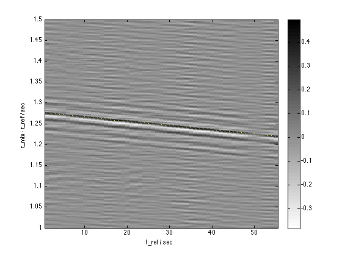
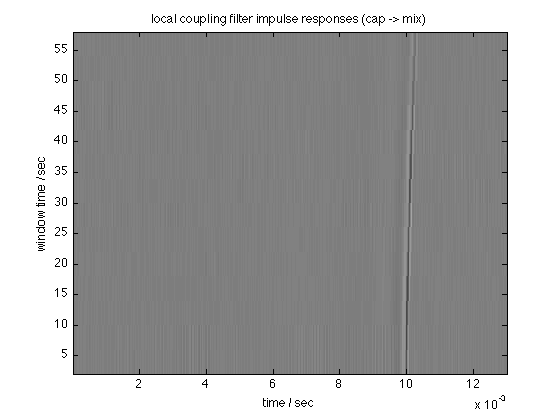
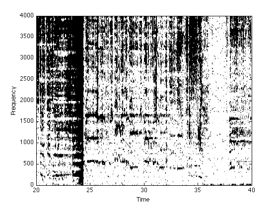
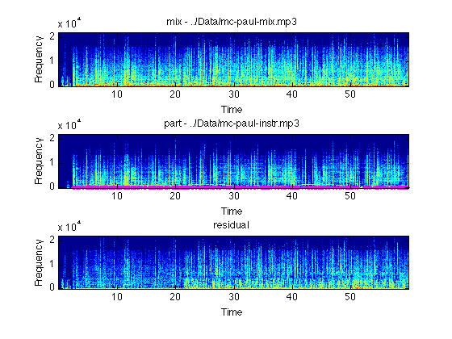

REMIXAVIER - Tools for recombining different mixes of a track
2013-06-28 Dan Ellis dpwe@ee.columbia.edu
The Remixavier ("remix savior") project is concerned with recovering the "difference" between different mixes of the same track. For instance, given a full mix and an instrumental, we can try to recover the vocals, or given the full mix and an a cappella version, we can try to produce an instrumental version. In the process, we can identify the precise temporal alignment between the two versions, which may be useful in its own right.
Assuming we have a full mix M and an instrumental version I, under ideal conditions we could recover the vocal line V as M - I. However, there are very often timing offsets and small sampling rate differences (clock drift) that will defeat the simple approach. We estimate these timing differences with short-time cross correlation (in deskew.m), and trim and resample to correct it to within a few parts per million (milliseconds of drift over the duration of a typical track).
But even with a perfect or near-perfect time alignment, there may be differences in gain, or more generally the channel frequency response, that will still make simple subtraction inadequate. Instead, we estimate the optimal equalization filter H to minimize the energy of M - H.I. This is done within find_in_mix.m, which calls decomp_lin_win.m to break the pair of signals into short chunks (e.g. 8 second chunks every 4 second), estimate the best coupling impulse response of each chunk in decomp_lin.m, then overlap-add the canceled residuals to produce the desired difference. This actually works by estimating a whitening filter for I so that the cross-correlation of the whitened versions of M and I is simply the coupling impulse response.
This approach to cancelation is inspired by the BSS_EVAL procedure of Fevotte, Gribonval, and Vincent. Essentially, we are finding the difference as the "artefacts residual" when M is considered an imperfect estimate of I.
Contents
- Example 1: Significant time skew and channel difference
- Channel estimation for example 1
- Example 2: Recovering instrumental, in stereo
- Example 3: Perfectly-aligned signals, and Wiener enhancement
- Example 4: Imogen Heap Instrumental Version
- Command line version
- Graphics display
- Command-line arguments
- Still to do
- See also
- Installation
- Notes
- Changelog
Example 1: Significant time skew and channel difference
This example consists of an original instrumental track, digitized from a vinyl LP release, and a rap that uses the track as backing, taken directly from a CD. Thus, the different signal paths mean that the timing is significantly different (clock drift of 0.1%), and the overall spectrum is very different too.
% Load in mix and acapella as mono files % These tracks diverge at the end (different edits), so just work % on the first minute sr = 44100; [dmix,sr] = mp3read('../Data/mc-paul-mix.mp3',[0 60*sr],1); [dins,sr] = mp3read('../Data/mc-paul-instr.mp3',[0 60*sr],1); % Attempt to trim and resample the full version to line up as well % as possible with the acapella doplot = 1; dmr = deskew(dmix, dins, sr, 0, 1, doplot); axis([0.5 55.5 1 1.5]) % It gets better when you repeat it dmr = deskew(dmr, dins, sr); % resampling can't handle ratios below 30 ppm, will just skip % beyond that.
Inital estimate of t_ref - t_part = 1.258141 (ref starts before part) Calculating short-time cross-correlation... Lin fit stats: sd = 0.000631 prop pts = 0.400 Lin fit: t_ref = 0.999002 t_part + 1.276 Resampling ratio: 22027/22049=0.999002 Inital estimate of t_ref - t_part = 0.000998 (ref starts before part) Calculating short-time cross-correlation... Lin fit stats: sd = 0.000218 prop pts = 0.800 Lin fit: t_ref = 0.999948 t_part + 0.003 Resampling ratio: 19408/19409=0.999948
Channel estimation for example 1
% Do the short-time coupling filter estimation tic; [resid, targ, filt, SNR, del, filts] = ... find_in_mix(dmr,dins,sr,0.013,0.003); toc % Listen to the residual (vocals) % (play the second 20 seconds) ix = 20*sr+[1:20*sr]; soundsc(resid(ix,:), sr); % Plot the time-local coupling filters (right channel) % filter IR time base tt = [1:size(filts,1)]/sr; % times of individual short-time window (every 4 sec) tw = 4.0*[1:size(filts,2)]; % plot imagesc(tt,tw,filts'); axis('xy'); xlabel('time / sec') ylabel('window time / sec') title('local coupling filter impulse responses (cap -> mix)') % scale down impulse response extremes caxis([-2 2])
Delay = 0.000340 s SNR = 0.037485 dB Elapsed time is 8.243200 seconds.
Example 2: Recovering instrumental, in stereo
The Duffy track has the vocals in stereo, we can cancel left and right separately to good effect
[dmix,sr] = mp3read('../Data/Duffy.WarwickAvenue.mp3'); [dcap,sr] = mp3read('../Data/duffy_-_warwick_avenue_acapella.mp3'); % Deskew will process stereo files. Skew is estimated from an % internally-generated mono mix dmr = deskew(dmix, dcap, sr); dmr = deskew(dmr, dcap, sr); clear resid targ for i = 1:size(dmr,2) tic; [resid(:,i), targ(:,i), filt, SNR, del, filts] = ... find_in_mix(dmr(:,i),dcap(:,i),sr,0.006,0.003); toc end soundsc(resid(ix,:), sr);
Inital estimate of t_ref - t_part = 10.304580 (ref starts before part) Calculating short-time cross-correlation... Lin fit stats: sd = 0.006009 prop pts = 0.272 Lin fit: t_ref = 1.005778 t_part + 9.485 Resampling ratio: 20018/19903=1.005778 Inital estimate of t_ref - t_part = -0.011973 (part starts before ref) Calculating short-time cross-correlation... Lin fit stats: sd = 0.000283 prop pts = 0.631 Lin fit: t_ref = 1.000134 t_part + -0.025 Resampling ratio: 7471/7470=1.000134 Delay = -0.000227 s SNR = -1.5445 dB Elapsed time is 24.347992 seconds. Delay = -0.000227 s SNR = -1.7085 dB Elapsed time is 24.232518 seconds.
Example 3: Perfectly-aligned signals, and Wiener enhancement
% Message In A Bottle is an ideal case - plain subtraction of mix % and instrumental yeilds clean vocals. But how does estimation do? % Load tracks as mono sr = 44100; dmix = mean(wavread('../Data/message-in-a-bottle-mix.wav'),2); dins = mean(wavread('../Data/message-in-a-bottle-ins.wav'),2); % They shoyld be perfectly aligned already, but run deskew just in case dmr = deskew(dmix, dins, sr); tic; [resid, targ, filt, SNR, del, filts] = ... find_in_mix(dmr,dins,sr,0.013,0.003); toc soundsc(resid(ix,:), sr); % We can apply a "wiener filter" (scaling of spectrogram magnitude % cells) to further reduce residual artifacts. In particular, we % can suppress cells where the energy in the estimated vocals is % significantly lower than the energy in the instrumental line % projected into the mix. wienerenhace takes a threshold so that % energy in the residual that is below -6 dB when compared to the % accompaniment is suppressed reswf = wienerenhance(resid, targ, -6.0); soundsc(reswf(ix,:), sr); % We can measure SNR by canceling against the true vocals, which % are simply the difference of dmix and dins (for this perfect example) dvox = dmix - dins; soundsc(dvox(ix,:), sr); % Yes, sounds clean [r2, t2, f2, S2, d2, fs2] = find_in_mix(resid,dvox,sr,0.010,0.003); %Delay = 0.000000 s %SNR = 19.9197 dB <-- this is our estimate of SDR [r2, t2, f2, S2, d2, fs2] = find_in_mix(reswf,dvox,sr,0.010,0.003); %Delay = 0.000000 s %SNR = 16.1096 dB % Wiener filtering introduces more artifact energy than it removes % interference.
Inital estimate of t_ref - t_part = 0.000000 Calculating short-time cross-correlation... Lin fit stats: sd = 0.000000 prop pts = 0.793 Lin fit: t_ref = 1.000000 t_part + -0.000 Delay = 0.000000 s SNR = 1.9983 dB Elapsed time is 42.697289 seconds. Delay = 0.000000 s SNR = 19.9197 dB Delay = 0.000000 s SNR = 16.8997 dB
Example 4: Imogen Heap Instrumental Version
This album was released with two versions of every track - a full mix, and an instrumental version. Since they are derived from the same digital masters, there is no clock drift, although they are not perfectly aligned in time. However, because each short segment reflects the same timing alignment, we can average the estimated coupling filters to further stabilize the estimation. Because there are a few outlier frames (degenerate estimates from when the vocal track is near silent), we combine across filters with a median instead of a mean.
[dmix,sr] = audioread('../Data/10-Aha_.m4a'); [dins,sr] = audioread('../Data/23-Aha_Instrumental_Version_.m4a'); % Deskew once just to remove any gross timing offset dmr = deskew(dmix, dins, sr); clear resid targ filts % Align each channel, and store all the individual filters for i = 1:size(dmr,2) tic; [resid(:,i), targ(:,i), filt, SNR, del, filts{i}] = ... find_in_mix(dmr(:,i),dins(:,i),sr,0.006,0.003); toc end soundsc(resid(ix,:), sr); % but form a grand average filter for each side f1 = median(filts{1}'); f2 = median(filts{2}'); % The estimated filter has a pre-echo, so trim that from the convolution [vv,xx] = max(abs(f1)); % xx is the index of the peak on the impulse response % .. then re-filter each side with this median average impulse response dinsf = [conv(f1,dins((xx+1):end,1)),conv(f2,dins((xx+1):end,2))]; % .. which we can subtract out ll = min(length(dmr),length(dinsf)); dvx = dmr(1:ll,:) - dinsf(1:ll,:); soundsc(dvx(ix,:),sr); % You can do OK with wiener enhancement even without cancelation fftlen = 2048; [mixwf,M] = wienerenhance(dmr, dins, 12.0, 2.0, fftlen); ff = [0:fftlen/2]*sr/fftlen; tt = [1:size(M,2)]*fftlen/4/sr; imagesc(tt,ff,M(:,:,1)); axis xy % the spectrogram mask xlabel('Time'); ylabel('Frequency'); axis([20 40 0 4000]) soundsc(mixwf(ix,:), sr); % but it sounds better based on the enhanced version [reswf,M] = wienerenhance(resid, targ, 12.0, 2.0); soundsc(reswf(ix,:), sr);
Inital estimate of t_ref - t_part = -0.025941 (part starts before ref) Calculating short-time cross-correlation... Lin fit stats: sd = 0.000011 prop pts = 0.783 Lin fit: t_ref = 1.000000 t_part + -0.026 Delay = 0.000000 s SNR = -2.0072 dB Elapsed time is 14.881408 seconds. Delay = 0.000000 s SNR = -2.1378 dB Elapsed time is 15.035218 seconds.
Command line version
remixavier.m wraps these processes into a single function, suitable for turning into a compiled Matlab command-line binary:
remixavier -mix ../Data/mc-paul-mix.mp3 -part ../Data/mc-paul-instr.mp3 -out tmp.wav -dur 60 -wiener_thresh 3.0 -gain 0.9
Inital estimate of t_ref - t_part = -1.258141 (part starts before ref) Calculating short-time cross-correlation... Lin fit stats: sd = 0.000163 prop pts = 0.269 Lin fit: t_ref = 1.001047 t_part + -1.277 Resampling ratio: 16249/16232=1.001047 Delay = 0.001905 s SNR = 0.33312 dB Delay = 0.002585 s SNR = 0.57672 dB Canceled audio written to tmp.wav
Graphics display
The -do_plot option provides for various visualizations: -do_plot 1 plots the initial cross-correlation alignment (similar to skewview); -do_plot 2 plots each of the short-time cancellation filter impulse responses, and -do_plot 3 shows aligned spectrograms of the mixture, the equalized part, and the residual:
remixavier -mix ../Data/mc-paul-mix.mp3 -part ../Data/mc-paul-instr.mp3 -dur 60 -wiener_thresh 3.0 -do_plot 3
Inital estimate of t_ref - t_part = -1.258141 (part starts before ref) Calculating short-time cross-correlation... Lin fit stats: sd = 0.000163 prop pts = 0.269 Lin fit: t_ref = 1.001047 t_part + -1.277 Resampling ratio: 16249/16232=1.001047 Delay = 0.001905 s SNR = 0.33312 dB Delay = 0.002585 s SNR = 0.57672 dB segSNR = 15.2378 (over 29.2296% of frames)
Command-line arguments
Invoke with -help to see all the command-line options:
remixavier -help
*** remixavier v0.03 of 20130709 -mix audio with extra source(s) () -part audio without extra source(s) () -out write audio output to this file () -alignout write aligned part to this file () -gain scale output by this to avoid clipping (1) -mono force files to mono? (0) -flip_stereo flip L and R of part (0) -samplerate resample inputs to this rate (0) -mix_start start reading mix file from this point (0) -part_start start reading part file from this point (0) -dur limit processing to this duration (0) -ir_dur total time extent of coupling filter (0.015) -ir_pre pre-echo time in coupling filter (0.005) -t_win duration of filter estimation window in sec (1) -t_hop hop between successive estimation wins in sec (0.5) -deskew_its how many times to pass through deskew (1) -deskew_sr sampling rate for initial deskew xcorr (1000) -square square waveforms before initial xcorr (1) -do_plot plot the results of deskewing (0) -wiener_win STFT duration for Wiener filter (0.05) -wiener_thresh local SNR threshold (in dB) for Wiener enhancement (-Inf) -wiener_width transition width (in dB) for Wiener (3)
Still to do
When the partial signal has very low energy, the coupling estimation goes crazy trying to boost it up to get rid of some of the energy. We should put in some kind of regularization/threshold to stop this.
We don't expect the coupling filter to vary much along time, so we ought to be able to get an improvement by smoothing it along time (as in the median filtering on the Imogen Heap example). However, if there is any clock drift, we can't assume sample-level alignment of the individual impulse response estimates. We could, however, estimate a single timing difference between each pair of impulse responses, then average them after backing that out. For instance, we could fit a linear phase model to the phase responses of each individual coupling IR, then average their zero-phase versions, then reintroduce the individual phases (delays) to redistribute over each segment.
See also
This project was developed in collaboration with Colin Raffel as part of HAMR 2013. There is another page describing the project in the HAMR Proceedings - Remixavier The code and data are on github: https://github.com/craffel/remixavier
Installation
This package has been compiled for several targets using the Matlab compiler. You will also need to download and install the Matlab Compiler Runtime (MCR) Installer. Please see the table below:
| Architecture | Compiled package | MCR Installer |
|---|---|---|
| 64 bit Linux | remixavier_GLNXA64.zip | Linux 64 bit MCR Installer |
| 64 bit MacOS | remixavier_MACI64.zip | MACI64 MCR Installer |
The original Matlab code used to build this compiled target is available at http://www.ee.columbia.edu/~dpwe/resources/matlab/remixavier
All sources are in the package remixavier-v@VER@.zip.
Feel free to contact me with any problems.
Notes
The included function audioread is able to read a wide range of sound file types, but relies on a number of other packages and/or support functions being installed. Most obscure of these is ReadSound, a MEX wrapper I wrote for the dpwelib sound file interface. See the audioread homepage for more details.
Changelog
% v0.03 2013-07-09 - added new options for deskew_sr (sampling % rate for initial delay estimation, default % 1000 Hz), changes to find_skew. % % v0.02 2013-07-02 - added -alignout % - some changes to audioread (tilde, ...) % - now published with spublish (for sounds) % % v0.01 2013-07-01 Initial release % Last updated: $Date: 2011/12/09 20:30:34 $ % Dan Ellis <dpwe@ee.columbia.edu>